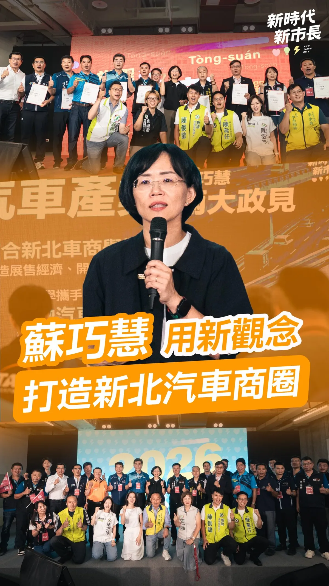

蘇巧慧su.chiaohui

@su.chiaohui:週六行程滿檔！打造新北觀光品牌 活絡商圈老街經濟！
Posts
@su.chiaohui:週六行程滿檔！打造新北觀光品牌 活絡商圈老街經濟！


勞工朋友的辛苦，我一直放在心上。 近日和台中市總工會理事長謝宗佑及各職業工會代表座談，傾聽第一線勞工需求，討論如何進一步保障勞工權益。 針對工會代表反映的老人健保眷屬保費問題，未來我會進一步盤點市府可以協助的空間，和中央攜手減輕勞工家庭負擔，讓勞工朋友獲得更完整的照顧與保障。 我也提出「六心勞工政見」：顧健康、穩就業、安心托、增創能、強職安、欣樂齡，從工作到生活，照顧勞工每一個人生階段。 未來我會和工會並肩努力，做勞工最堅實的後盾，打造一座友善勞工的「欣好台中市」！ #心存大台中 #市長換欣_台中創新


力挺無人機！2400億強化國防與產業，高雄市民也支持 立法院8月27日三讀通過《無人載具產業發展條例》，未來六年將編列2400億元預算。 我支持國防，更支持把國防產業真正做起來。國民黨提出的2400億元版本，相較行政院2100億元版本，涵蓋空中、水面、水下及地面無人載具，範圍更完整，也更能兼顧國防需求與產業發展。 而且，這不只是國民黨的主張。根據風傳媒今日公布的最新調查，37.6%的高雄市民支持2400億元版本，支持度是2100億元版本的兩倍以上。高雄鄉親用民意告訴我們：支持國防，也支持台灣把無人機產業做起來。 今年我持續走訪高雄在地企業，了解產業需求；日前美國亞利桑那州代表團來台尋找無人機合作夥伴時，我也主動向美方推介高雄完整產業鏈。經過積極爭取，代表團在8月於高雄舉辦無人機商務洽談會，讓高雄企業直接與國際市場接軌。 高雄有岡山、路竹的國防航太與精密製造聚落，加上AI、半導體、電池、通訊等產業基礎，有條件成為台灣無人機產業的重要基地。 另外高雄擁有亞灣，更有完整的產學研能量，包括中山大學、高雄科技大學、以及去年進駐高雄的國立陽明交通大學也蓄勢待發、一起助攻培力人才。未來高雄不能只做傳統製造與造船重鎮，更應向上升級、成為全球智慧海空無人系統的研發、製造與軍民通用基地。 我認為未來的市政應推動「高雄海空無人載具科技產業廊帶」，串聯產業聚落，結合金屬中心與在地大學研究資源，建立從輕量化複材機身、5G 飛控資安、海空兩棲感測，到實域測試與維修後勤的完整產業鏈，並全力向中央爭取國家級無人機與無人船艇實測驗證基地落腳高雄。 同時，結合高雄各大學的資通訊與機電學院，設置「無人載具與航太科技專班」，培育飛控演算法、資安導航與系統整合人才，替高雄在地青年與工科人才創造半導體之外，另一條通往高薪與高科技的發展道路。 如果半導體是台灣第一座護國神山，無人機就有機會成為下一座。未來無人機不只可以強化國防，也能應用在高雄山區救災、積淹水監測、火災搜救及偏鄉運輸，創造更多產業與應用場景。 國防要顧，產業也要拚。 8月14日，634億元無人機預算全數通過；8月27日，2400億元《無人載具產業發展條例》也三讀通過。這已經證明，真正被打臉的，是那些把「監督預算」扭曲成「阻擋產業」的人。 從634億元到2400億元，國民黨一路支持國防、支持無人機產業。高雄需要的，是把無人機產業真正做起來，讓國防需求轉化為產業機會、讓高雄企業接軌國際，而不是把無人機變成民進黨選舉攻防、政治操作的工具。 我會繼續替高雄爭取資源，把高雄的產業實力變成國防實力，也把國防需求變成高雄的產業機會。

Meet大南方登場，匯聚高雄新創能量 今天與陳其邁 Chen Chi-Mai 市長、經濟部龔明鑫部長一同來到高雄展覽館，參加第六屆「Meet Greater South 亞灣新創大南方」。今年集結250組國內外新創團隊，預計促成150組以上商務媒合，吸引超過1.2萬人次參觀，再次展現南台灣豐沛的創新能量。 從鋼鐵、石化、造船、金屬，到半導體、電子及AI伺服器，高雄擁有完整而多元的產業基礎及實際應用場域。目前，亞洲新灣區有超過340家企業進駐，我會持續推動「大亞灣計畫」，串聯205兵工廠、AI產業、新創、企業總部、智慧商辦及交通建設，進一步打造世界級產業聚落。 讓好點子在高雄找到舞台，讓創新成果走進產業，期待更多企業與新創在大南方相遇，一起開創高雄產業的下一步！ 📍Meet Greater South 亞灣新創大南方 •展覽時間｜8/28（五）09:00–17:00、8/29（六）09:30–17:00 •展覽地點｜高雄展覽館北館 林智鴻 高雄市議員 吳昱鋒-鎮港小前鋒
@su.chiaohui:這十年來，我和大家一起在新北打拚，因此最清楚大家的需要。 未來進到市政府，我會引入新觀念，繼續做大家最堅實的後盾！ 新時代、新市長，未來我不但會照顧產業，活絡新北的商業活動，帶動汽車產業再發展，也要持續匯聚各行各業的力量，讓產業與人才，都在新北發光發熱！

無人機條例三讀！ 強化國防自主，振興台灣產業！ 今天立法院三讀通過《強化國防自主暨無人載具產業發展條例》（無人機條例）。 台灣要發展無人機產業，不能只靠政府一口氣下大單、拚採購數字，最後卻讓訂單集中少數廠商，甚至關鍵零組件、核心技術還得看別人臉色。 國民黨提出的6年2400億元版本，就是希望透過長期、穩定政策，把國防需求轉化成扶植台灣產業的力量，避免只衝短期採購，卻沒有留下技術與產能。 這次三讀有幾個重點： 👉 6年投入2400億元 原則每年400億元，透過年度預算逐年審議、接受國會監督。 👉國防需求與產業發展並進 軍用採購結合產業政策，讓國防需求帶動國內研發與製造。 👉建立台灣自己的供應鏈 從研發、製造、維修到測試，扶植國內廠商與中小企業，把產業根留在台灣。 龍介支持強化國防，但錢一定要花在刀口上。2400億元不能只買裝備，更要轉化成真正戰力、強化國防自主，也要成為台灣產業升級的機會。 把技術留在台灣、把產能留在台灣。國防更自主，產業更有力，台灣才會更安全。
支持國防不應淪為口號•穩定發展才是根本之道 今天立法院在野黨再次以人數優勢，表決通過《國防自主無人載具採購條例》在野黨版本，將原本加速建軍的特別預算，改為逐年編列，這對國防相關產業來說是壞消息，因為沒有穩定的訂單，就難以蓬勃發展相關產業，遑論研發新技術與培養一流人才。 國防自主不能只靠口號。 一架無人機升空、一艘無人艦艇下水，背後都是工程師、技師和勞工的專業。要把人才留在台灣、留在高雄，企業就必須看得到穩定的訂單與未來。 我們支持行政院特別預算版本，就是希望一次到位，讓企業敢投入研發、擴充產線，也讓勞工有穩定的工作。 產業有未來性，才有增加投資的可能。 如今改為逐年編列，每年都要面對預算審查的不確定性。只要預算遭到刪減或延宕，企業投資、產線運作和人才留任都會受到影響。 高雄有台船的造船實力、漢翔岡山廠的航太技術，也有完整的金屬、機械與資通訊供應鏈。這些基礎不能因為政治攻防而被拖慢。 世界正在證明無人載具的重要性。 俄烏戰爭已明確展現無人載具是現代戰場的重要戰力。不僅是國防，包括民生與商業用途、公共安全與災害救援等方面，無人載具的使用範圍廣袤、使用方式多樣，因此，國防建設不能等，產業發展也不能等。 未來，我要讓國防訂單留在高雄、產業升級留在高雄，更要讓專業人才願意留在高雄。 國防要靠實力，產業要有訂單，人才才留得住。高雄有能力，也應該成為台灣國防自主的重要基地。

毛孩不僅是寵物，更是我們的家人，因此我推出「寵愛毛孩5大安心、1個加碼」，從環境改善、醫療照護、飼主課程、安心認養到寵物產業，全面升級相關政策，希望讓台中成為毛孩可以安心生活的友善城市。 如果你也認同牠們值得更好的照顧，歡迎收看影片，也請幫忙分享，讓更多人一起關心毛孩的權益🐈🐕

@schuanglawyer:明天早上9:00，新永和市場動起來✨ 新永和市場從舊永和市場一路延續桃園人的採買日常，如今有室內空調、乾濕分離、共食區和停車空間，生鮮蔬果、肉品、水產到熟食一次都能買齊，獲得經濟部「四星優良市集」肯定🌟 明早9:00一起到新永和市場杰伴同行！心桃園，動起來💖

🌏 讓臺灣的聲音，成為亞太共同的行動！ 第54屆APPU大會圓滿落幕！今天，我與各會員國代表團團長共同簽署聯合公報。 本屆大會通過6項決議，其中臺灣提出的 #民主與韌性供應鏈 、 #糧食供應鏈韌性 及 #海洋廢棄物治理與支持臺灣國際參與3項提案，全數獲得通過！ 臺灣不只願意參與，更有能力為國際社會作出貢獻。國內可以競爭，對外一定要團結。感謝跨黨派委員共同努力，也恭喜友邦帛琉接棒明年主辦國。 透過國會外交與國際對話，啟臣會繼續為臺灣累積信任、爭取支持，讓世界看見臺灣🇹🇼 #國會外交 #APPU54 #讓世界看見臺灣 #能在地能國際

@zenolai:從簡、從速、從寬，高雄農業災損啟動「免勘查」措施 為了讓受豪雨影響的農民朋友能更快申請農業災害救助，農業部公告，針對8月下旬豪雨造成的農作物損害，啟動簡化措施，落實「從簡、從速、從寬」。 這次高雄市全區適用，符合以下條件的農作物，區公所將採簡化程序，得「免勘查」辦理： 🔺適用地區：高雄市全區 🔺適用農作物：蔬菜全品項、酪梨、木瓜、番石榴 🔺注意事項：以「塑膠布溫網室」栽培的農作物不適用此簡化措施。 各區公所接下來會陸續公告受理時間，也請受災農民朋友留意所在地區公所的最新消息，在期限內提出申請。

@prof.kochihen:力挺無人機！2400億強化國防與產業，高雄市民也支持 立法院8月27日三讀通過《無人載具產業發展條例》，未來六年將編列2400億元預算。 我支持國防，更支持把國防產業真正做起來。國民黨提出的2400億元版本，相較行政院2100億元版本，涵蓋空中、水面、水下及地面無人載具，範圍更完整，也更能兼顧國防需求與產業發展。 而且，這不只是國民黨的主張。根據風傳媒今日公布的最新調查，37.6%的高雄市民支持2400億元版本，支持度是2100億元版本的兩倍以上。高雄鄉親用民意告訴我們：支持國防，也支持台灣把無人機產業做起來。

每次不同的行程都會有各式結論與收穫，這天啟臣在八仙山林場宿舍群進行考察時，除了思考到未來這些歷史建築群修復後的活化、融入市民生活，也在文創商品區意外發現這隻可愛的臺灣特有亞種「白面鼯鼠」，我立刻帶著他一起去趕下一個行程！ 未來，不只是把這些臺灣在地文創帶回家收藏，啟臣更要把我們在地的臺中味帶到國際上，讓國際友人感受到臺中的創意、熱情及各項軟硬實力，持續努力 #讓世界看見臺灣！ #臺中味 #臺中Way #Taichungway #文化味 #文化搭臺 #經濟唱戲 #臺中啟程 #打造旗艦城 #文創 #能在地能國際 #讓臺中走向國際
Meet大南方登場，匯聚高雄新創能量 今天與陳其邁 Chen Chi-Mai 市長、經濟部龔明鑫部長一同來到高雄展覽館，參加第六屆「Meet Greater South 亞灣新創大南方」。今年集結250組國內外新創團隊，預計促成150組以上商務媒合，吸引超過1.2萬人次參觀，再次展現南台灣豐沛的創新能量。 從鋼鐵、石化、造船、金屬，到半導體、電子及AI伺服器，高雄擁有完整而多元的產業基礎及實際應用場域。目前，亞洲新灣區有超過340家企業進駐，我會持續推動「大亞灣計畫」，串聯205兵工廠、AI產業、新創、企業總部、智慧商辦及交通建設，進一步打造世界級產業聚落。 讓好點子在高雄找到舞台，讓創新成果走進產業，期待更多企業與新創在大南方相遇，一起開創高雄產業的下一步！ 📍Meet Greater South 亞灣新創大南方 •展覽時間｜8/28（五）09:00–17:00、8/29（六）09:30–17:00 •展覽地點｜高雄展覽館北館 林智鴻 高雄市議員 吳昱鋒-鎮港小前鋒

這十年來，我和大家一起在新北打拚，因此最清楚大家的需要。未來進到市政府，我會引入新觀念，繼續做大家最堅實的後盾！ 針對新北汽車產業發展，我特別提出兩項具體主張： ✅ 舉辦「#新北汽車展」，串連在地商圈與影視音、遊戲、餐旅觀光等產業，開創多元商機。 ✅ 建立「#汽車銷售專業認證」，加深消費信任，提升成交機會。 #新時代 #新市長，未來我不但會照顧產業，活絡新北的商業活動，帶動汽車產業再發展，也要持續匯聚各行各業的力量，讓產業與人才，都在新北發光發熱！


無人機條例三讀！ 強化國防自主，振興台灣產業！ 今天立法院三讀通過《強化國防自主暨無人載具產業發展條例》（無人機條例）。 台灣要發展無人機產業，不能只靠政府一口氣下大單、拚採購數字，最後卻讓訂單集中少數廠商，甚至關鍵零組件、核心技術還得看別人臉色。 國民黨提出的6年2400億元版本，就是希望透過長期、穩定政策，把國防需求轉化成扶植台灣產業的力量，避免只衝短期採購，卻沒有留下技術與產能。 這次三讀有幾個重點： 👉 6年投入2400億元 原則每年400億元，透過年度預算逐年審議、接受國會監督。 👉國防需求與產業發展並進 軍用採購結合產業政策，讓國防需求帶動國內研發與製造。 👉建立台灣自己的供應鏈 從研發、製造、維修到測試，扶植國內廠商與中小企業，把產業根留在台灣。 龍介支持強化國防，但錢一定要花在刀口上。2400億元不能只買裝備，更要轉化成真正戰力、強化國防自主，也要成為台灣產業升級的機會。 把技術留在台灣、把產能留在台灣。國防更自主，產業更有力，台灣才會更安全。

新北的工廠多，人也最多。 每天早上六點半，捷運上滿滿都是要出去上班的人。 輝達會留在北士科，那一年多我全程在裡面。 未來五股、蘆洲、林口、淡水、土城、鶯歌、新店——我要把AI跟高科技的產業鏈拉進這幾個地方。 我看的不是三年五年，是往後三十年。 好工作留在新北，人就留在新北。
巧觀點 活絡新北商業活動 汽車產業再發展 未來我不但會照顧產業，也要持續匯聚各行各業的力量，讓產業與人才，都在新北發光發熱！ 2026.08.27

明天早上9:00，新永和市場動起來✨ 新永和市場從舊永和市場一路延續桃園人的採買日常，如今有室內空調、乾濕分離、共食區和停車空間，生鮮蔬果、肉品、水產到熟食一次都能買齊，獲得經濟部「四星優良市集」肯定🌟 明早9:00一起到新永和市場杰伴同行！心桃園，動起來💖

@a_chun1973:我提出「寵愛毛孩5大安心、1個加碼」，打造更全面、更友善的寵物欣樂園！ 1️⃣ 友善環境安心 升級公園寵物專區、串聯毛孩友善店家。 2️⃣ 醫療量能安心 鼓勵動物醫院增加夜間急診，培育動物醫事助理人才。 3️⃣ 飼主學習安心 免費提供照護、行為、清潔美容及生命教育課程。 4️⃣ 動物領養安心 提升收容品質、打擊非法繁殖；公立動物之家認養再加碼500元疫苗補助＋免費基礎健檢。 5️⃣ 寵物產業安心 強化寵物食品、寄養、美容等專業培訓。 ⭐ 再加碼500元「台中版寵物券」 設籍台中、毛孩完成寵物登記即可申請，減輕飼主負擔，也支持在地寵物產業。

@a_chun1973:看到謝金河董事長感嘆發文「誰在阻擋台灣的無人機產業？」 我深有同感，且為台中傳產及無人機業者感到憂心忡忡！ 2400億元的無人載具條例通過，謝董認為，如果這個法案對產業發展有利，那麼資本市場一定強烈大漲回應，不過，股市卻大跌回應，尤其一些代表性的個股都跌很重。這顯示，無人載具條例雖通過，但卻內藏重重機關，也讓無人機產業發展備受波折。 謝董話鋒一轉，台灣發展無人機產業，除了國防需求之外，也是產業陷入瓶頸的傳統產業轉型的新契機，尤其是台中市的工具機產業、五金零件產業等，但，事關台灣生存的最大敵人卻使盡全力封鎖這些產業。 謝董很感慨，只有台灣最奇怪，生活在這塊土地上的人，他們愛別人的國家，而且還拿刀捅自己！這是台灣的最不幸！ 我非常認同謝董所言，勞工、產業、與民意都清楚表示，台灣應該在國家安全下、經濟、民生、產業繼續往前大步發展，身為國會議員，為所當為、言所當言。如果只是口惠實不至、閃躲不表態，就是默許丶眼睜睜看著台中產業被扼殺。 我遺憾、也很難過，但我不會放棄、我要繼續拚搏，為這片土地為產業的未來而努力！

力挺無人機！2400億強化國防與產業，高雄市民也支持 立法院8月27日三讀通過《無人載具產業發展條例》，未來六年將編列2400億元預算。 我支持國防，更支持把國防產業真正做起來。國民黨提出的2400億元版本，相較行政院2100億元版本，涵蓋空中、水面、水下及地面無人載具，範圍更完整，也更能兼顧國防需求與產業發展。 而且，這不只是國民黨的主張。根據風傳媒今日公布的最新調查，37.6%的高雄市民支持2400億元版本，支持度是2100億元版本的兩倍以上。高雄鄉親用民意告訴我們：支持國防，也支持台灣把無人機產業做起來。 今年我持續走訪高雄在地企業，了解產業需求；日前美國亞利桑那州代表團來台尋找無人機合作夥伴時，我也主動向美方推介高雄完整產業鏈。經過積極爭取，代表團在8月於高雄舉辦無人機商務洽談會，讓高雄企業直接與國際市場接軌。 高雄有岡山、路竹的國防航太與精密製造聚落，加上AI、半導體、電池、通訊等產業基礎，有條件成為台灣無人機產業的重要基地。 另外高雄擁有亞灣，更有完整的產學研能量，包括中山大學、高雄科技大學、以及去年進駐高雄的國立陽明交通大學也蓄勢待發、一起助攻培力人才。未來高雄不能只做傳統製造與造船重鎮，更應向上升級、成為全球智慧海空無人系統的研發、製造與軍民通用基地。 我認為未來的市政應推動「高雄海空無人載具科技產業廊帶」，串聯產業聚落，結合金屬中心與在地大學研究資源，建立從輕量化複材機身、5G 飛控資安、海空兩棲感測，到實域測試與維修後勤的完整產業鏈，並全力向中央爭取國家級無人機與無人船艇實測驗證基地落腳高雄。 同時，結合高雄各大學的資通訊與機電學院，設置「無人載具與航太科技專班」，培育飛控演算法、資安導航與系統整合人才，替高雄在地青年與工科人才創造半導體之外，另一條通往高薪與高科技的發展道路。 如果半導體是台灣第一座護國神山，無人機就有機會成為下一座。未來無人機不只可以強化國防，也能應用在高雄山區救災、積淹水監測、火災搜救及偏鄉運輸，創造更多產業與應用場景。 國防要顧，產業也要拚。 8月14日，634億元無人機預算全數通過；8月27日，2400億元《無人載具產業發展條例》也三讀通過。這已經證明，真正被打臉的，是那些把「監督預算」扭曲成「阻擋產業」的人。 從634億元到2400億元，國民黨一路支持國防、支持無人機產業。高雄需要的，是把無人機產業真正做起來，讓國防需求轉化為產業機會、讓高雄企業接軌國際，而不是把無人機變成民進黨選舉攻防、政治操作的工具。 我會繼續替高雄爭取資源，把高雄的產業實力變成國防實力，也把國防需求變成高雄的產業機會。

每次不同的行程都會有各式結論與收穫，這天啟臣在八仙山林場宿舍群進行考察時，除了思考到未來這些歷史建築群修復後的活化、融入市民生活，也在文創商品區意外發現這隻可愛的臺灣特有亞種「白面鼯鼠」，我立刻帶著他一起去趕下一個行程！ 未來，不只是把這些臺灣在地文創帶回家收藏，啟臣更要把我們在地的臺中味帶到國際上，讓國際友人感受到臺中的創意、熱情及各項軟硬實力，持續努力 #讓世界看見臺灣！ #臺中味 #臺中Way #Taichungway #文化味 #文化搭臺 #經濟唱戲 #臺中啟程 #打造旗艦城 #文創 #能在地能國際 #讓臺中走向國際
Revitalizing Commercial Districts: Boosting the New Taipei Automotive Industry!

@hsiehlungchieh:無人機條例三讀！ 強化國防自主，振興台灣產業！ 今天立法院三讀通過《強化國防自主暨無人載具產業發展條例》（無人機條例）。 台灣要發展無人機產業，不能只靠政府一口氣下大單、拚採購數字，最後卻讓訂單集中少數廠商，甚至關鍵零組件、核心技術還得看別人臉色。 國民黨提出的6年2400億元版本，就是希望透過長期、穩定政策，把國防需求轉化成扶植台灣產業的力量，避免只衝短期採購，卻沒有留下技術與產能。 這次三讀有幾個重點： 👉 6年投入2400億元 原則每年400億元，透過年度預算逐年審議、接受國會監督。 👉國防需求與產業發展並進 軍用採購結合產業政策，讓國防需求帶動國內研發與製造。 👉建立台灣自己的供應鏈 從研發、製造、維修到測試，扶植國內廠商與中小企業，把產業根留在台灣。 龍介支持強化國防，但錢一定要花在刀口上。2400億元不能只買裝備，更要轉化成真正戰力、強化國防自主，也要成為台灣產業升級的機會。 把技術留在台灣、把產能留在台灣。國防更自主，產業更有力，台灣才會更安全。
@zenolai:支持國防不應淪為口號•穩定發展才是根本之道 今天立法院在野黨再次以人數優勢，表決通過《國防自主無人載具採購條例》在野黨版本，將原本加速建軍的特別預算，改為逐年編列，這對國防相關產業來說是壞消息，因為沒有穩定的訂單，就難以蓬勃發展相關產業，遑論研發新技術與培養一流人才。 國防自主不能只靠口號。 一架無人機升空、一艘無人艦艇下水，背後都是工程師、技師和勞工的專業。要把人才留在台灣、留在高雄，企業就必須看得到穩定的訂單與未來。 我們支持行政院特別預算版本，就是希望一次到位，讓企業敢投入研發、擴充產線，也讓勞工有穩定的工作。 產業有未來性，才有增加投資的可能。 如今改為逐年編列，每年都要面對預算審查的不確定性。只要預算遭到刪減或延宕，企業投資、產線運作和人才留任都會受到影響。 高雄有台船的造船實力、漢翔岡山廠的航太技術，也有完整的金屬、機械與資通訊供應鏈。這些基礎不能因為政治攻防而被拖慢。

江啟臣委員，你今天會進立法院議場表決嗎？投下支持台中廣大勞工朋友及產業的一票！ 延會最後一天的院會，要處理無人載具特別條例，我希望你能勇敢進場投票。過去在國防軍購特別條例，刪去4700億無人機預算，你沒聲音；為補救被刪砍預算，行政院提出特別條例，我6度向你鞠躬請託不要擋，你置之不理；今天表決，我希望你能現身表態！ 昨天你以立法院副院長之姿率團訪日回國，說提案建立民主與韌性的供應鏈體系，但國防安全與自主、展現防衛決心，在今天要表決的無人載具條例，不就是最根本嗎？口頭支持、總該化為實際行動了吧！ 此外，昨晚你面對記者詢問，如何看待盧市長用台中市府公帑認購中秋月餅的問題，你說，這3天都在國外，這部分還不清楚，待了解後會再跟大家報告。所以，今天會有答覆嗎？ 市民有許多問題想問你，但你貴為立法院副院長，各場合都有大批隨員可幫你避開媒體詢問。不過，同為競選台中市長，容我提醒，競選過程中對重大議題表態，都是民主選舉的一環，也是對市民朋友最基本的尊重！

地底下沒有光。台灣的經濟，曾經是他們用命換上來的。 礦工前輩「折腰再折腰」，撐起的是幾代人的生活，是咱新北猴硐的驕傲。 今天我到猴硐礦工文史館，拜訪礦長周朝南，還有許多礦工前輩，以及為礦工文化保存盡心盡力的志工們。百年的礦業歷史，他們講起來依舊如黑金般閃閃發亮。 我當起一日礦工，整裝起來，倒真像我過去的裝扮，只是採礦頭燈安全帽、鏟子、裝渣機等等，各個不同，是完全不一樣的領域。 礦長和幹部以及志工們，對於煤礦文化的保存，他們把歷史顧住了。接下來，換我們把人帶進來。 日前我提出「水金九以及猴硐台車復駛計畫」，要讓所有民眾和孩子，都能了解文化，體驗歷史，更要帶動觀光，讓更多人看見猴硐。 過去我時常進出隧道及下水道，和礦工前輩或許有相同的「地底經驗」，我很清楚黑暗、高溫、高濕的工作環境，是多麼辛苦，那種克難與堅強，是我一輩子要向礦工前輩學習的課題。 礦工前輩說：入坑，命是土地公的；出坑，命才是自己的。 過去，他們把命交給天地，未來，猴硐的下一段路，我來鋪。


🤖「機器人產業」台南再添新引擎！ 今天「台南機器人產業發展創新中心」正式啟用，串聯技術研發、場域驗證、企業媒合與投資服務，謝謝 賴清德 總統、 黃偉哲 市長、立法委員賴惠員 委員讓機器人產業在台南加速落地、形成產業聚落。 這正是亭妃提出的「科技三軸」重要一環—以南科半導體、沙崙綠能AI、後壁智慧農業三大軸線，串起台南科技產業的未來。 台南不只要做製造，更要掌握智慧製造的下一個世代，讓科技成為台南產業升級的最大動能！ #陳亭妃 #科技三軸 #智慧機器人 #產業升級 #台南

@schuanglawyer:一早來到內壢市場！很多鄉親特地來等待，世杰跟團隊從市場一路走進街區，收到好多鼓勵跟打氣💪🏻我要特別感謝內壢福海宮劉守榮主委，昨晚不幸遇到車禍，今天依然堅持到場相挺，真的很感動，祝福主委早日康復。 大內壢居民超過十萬，人口持續成長。今天有不少市民跟攤商跟我反映，新華街路面多年沒有重新刨鋪，內壢國小通學廊道完成後，這一帶停車空間缺乏的問題，依然沒有一併改善。大家期待逛市場的感受更好，期待整體生活環境可以同步升級！ 這些看似日常的小事，其實都是居民每天生活最直接的感受。 未來鐵路地下化，沿線將會釋出更多公共空間。世杰上任後，會全面盤點居民需求，規劃地方期待已久的公有市場，改善公有空間雍塞跟不足的問題。同時也要積極協助鐵路地下化，讓工程如期如質完成。 感謝謝內壢市場的熱情，大家送上柿子、粽子、白蘿蔔，祝福世杰「事事如意、好事接粽來、好彩頭」，滿滿心意我都收到了！ 人口在成長，建設不能慢下來。我一定會全力以赴，讓內壢生活更便利、發展更順暢！心內壢，動起來💖